Everything to get excited about — beaches, animals, forest walks, treats, and travel games for 33 days in British Columbia
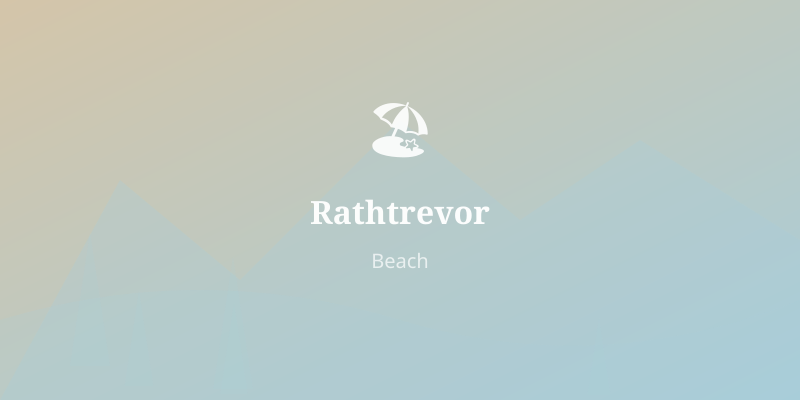
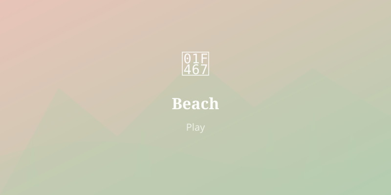
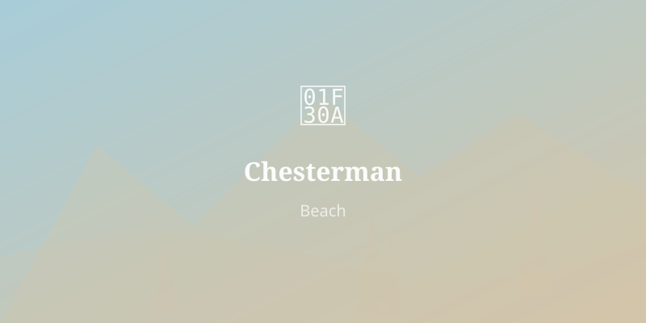
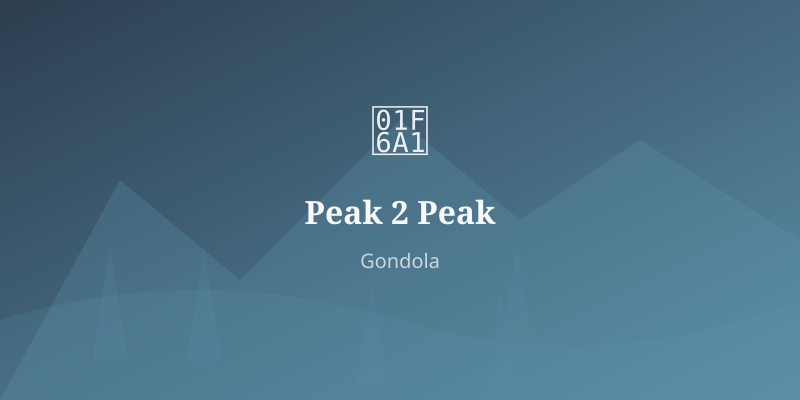
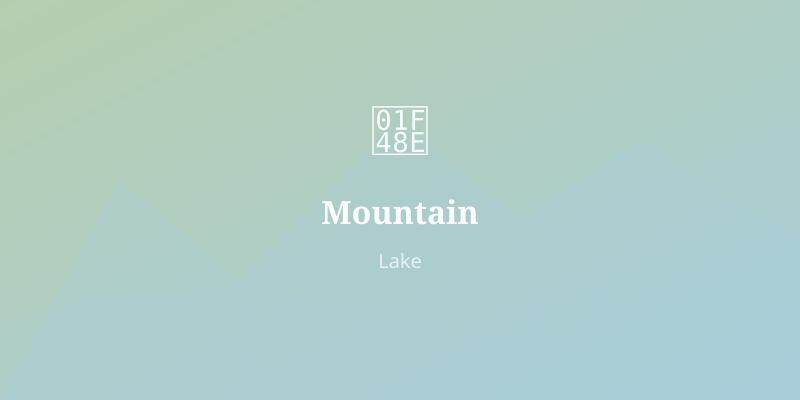
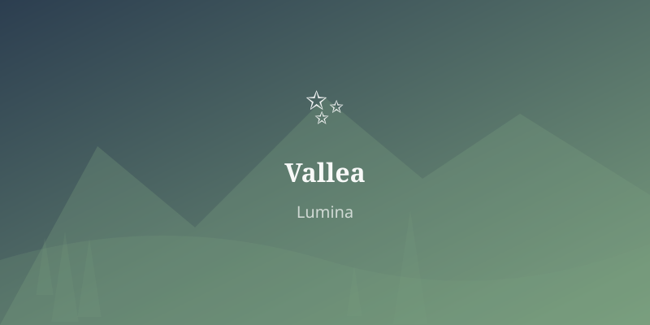
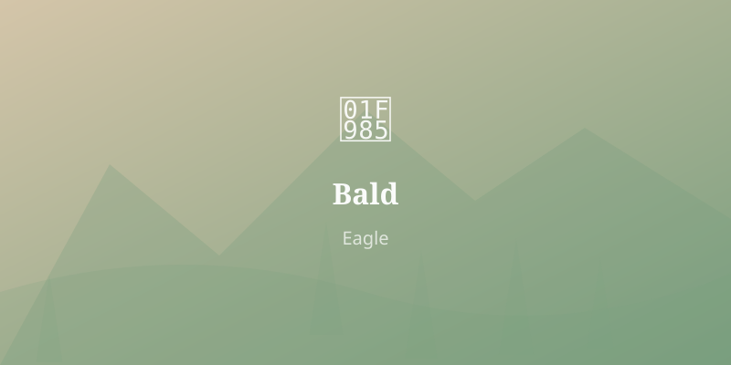
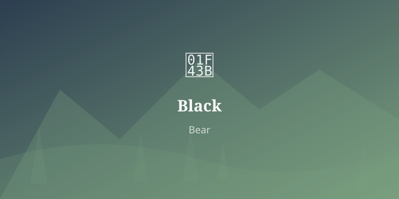
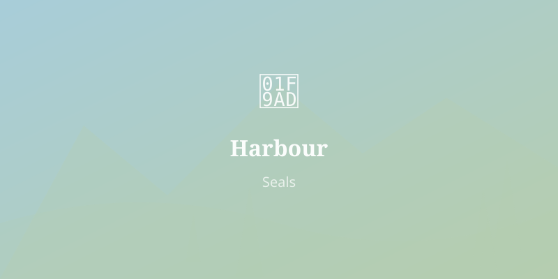
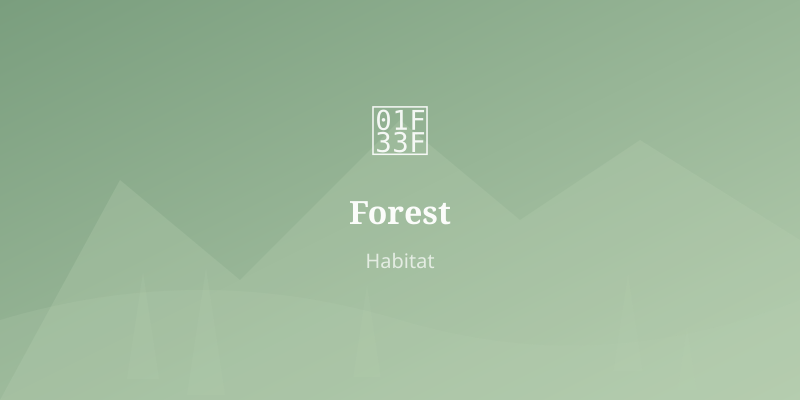
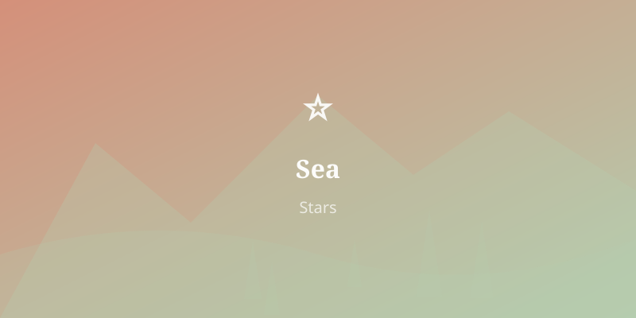
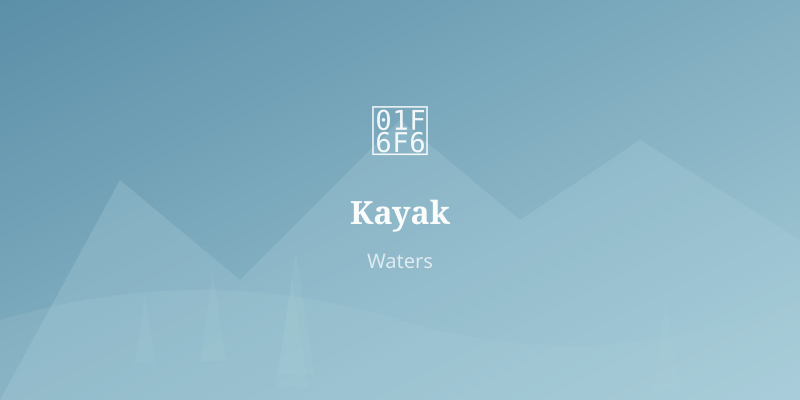
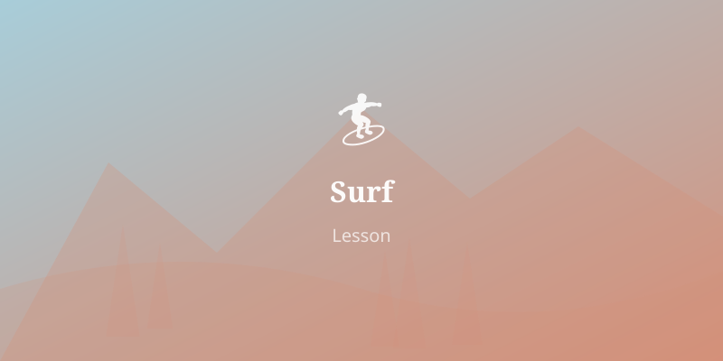
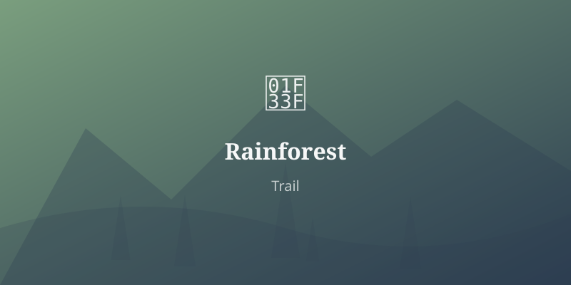
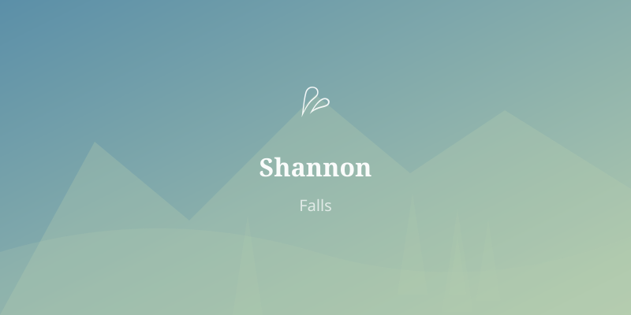
The longest drive is Tofino → Comox (~4 hours with stops). Most other drives are 1–2.5 hours.
Make a bingo card before the trip with: eagle, heron, seal, black bear, deer, raven, jellyfish, sea star, sea lion, orca, crab, goat (Coombs counts!). Check each one off as you spot it across the whole trip. First to fill a row wins.
On each ferry crossing, find: a seagull, an island, another ferry, a kayak, a mountain with snow, a lighthouse, someone's dog, a flag. The ferries are big enough to explore — there's an outside deck, a cafeteria, and usually a play area.
Buy a postcard at each new place. Write one line about what you liked best. Collect them all and bring them home as a trip diary. At the end you'll have postcards from Vancouver, Deep Cove, Whistler, Victoria, Tofino, Cumberland, Pender Harbour, and more.
In Tofino, you're in charge of checking the tide table each evening. Predict what the beach will look like in the morning — will the tombolo to Frank Island be there, or will it be underwater? Will there be tide pools or just waves? Keep a score of correct predictions.
At Cathedral Grove, find a fallen tree and count the rings. Each ring is one year. How old is it? Was it alive when your school was built? When your grandparents were born? When the first trains ran?
BC has distinctive green highway signs and brown park signs. See how many different types you can photograph: HWY 99 HWY 4 ⛴️ BC FERRIES — plus any animal crossing signs (watch for bear and deer warnings!).